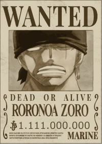
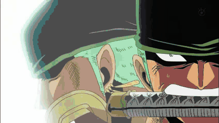

Quem é Roronoa Zoro?
Roronoa Zoro, também conhecido como Zoro o Caçador de Piratas ou pros mais íntimos Marimo recebendo esse apelido de Sanji, é um personagem da série One Piece criada por Eiichiro Oda. Na história, Zoro era um caçador de piratas que por fim se torna um quando é convencido pelo protagonista Monkey D. Luffy a ser o primeiro membro de sua tripulação, os Piratas do Chapéu de Palha. Dentro do grupo, Zoro tem a função de combatente e muitas vezes assume o papel de imediato do bando. Sua maior característica é lutar usando três katanas em um estilo de esgrima que ele mesmo inventou, o santoryu (Santōryū). Enquanto Luffy almeja ser o Rei dos Piratas, Zoro busca se tornar o maior espadachim do mundo e para isso precisa derrotar o atual detentor do título, Dracule Mihawk.
Zoro é usualmente visto como sério e distante, mas também alguém que reage de forma cômica e exagerada por conta de sua impaciência e mau-humor. Dentro de sua tripulação, Zoro é o membro que menos chora e o que mais lembra seu grupo de fatos duros e chocantes. Ele costuma ir direto ao ponto e as vezes é mal interpretado como frio. Seu companheiro que mais consegue fazê-lo rir é Luffy. A relação de Zoro com seu capitão é muito profunda, ele faz de tudo para que Luffy realize seu sonho de se tornar Rei dos Piratas mas também exige firmemente que ele aja como um bom líder. Em momentos quando Luffy está indisponível, Zoro tende a assumir o comando.
Um traço comum de Zoro é o alcoolismo. Ele é constantemente retratado carregando uma garrafa de bebida, em geral saquê. Também gosta de dormir muito quando está navegando e é muito apegado às suas espadas. Quando não está dormindo, ele está treinando para ficar mais forte. Uma piada frequente em One Piece é o péssimo senso de direção de Zoro, se perde ate em linha reta nosso Marimo.
Atualmente sua recompensa está nos 1.111 Bilhão de Berries
Tecnicas de Zoro
Zoro treina desde cedo para se tornar o melhor espadachim do mundo; quando criança ele já era capaz de derrotar adultos. Ele mesmo inventou seu estilo de luta característico, o santoryu (Santōryū). Aplicando o santoryu, Zoro mantém uma espada em cada mão e a terceira ele segura com a boca. O estilo santoryu é capaz de atacar o mesmo oponente várias vezes ou golpear mais de um oponente ao mesmo tempo. Além de cortes e estocadas, Zoro consegue disparar ataques de ar comprimido. Se necessário ele também luta usando o estilo de duas espadas, nitoryu (Nitōryū), ou o estilo de uma espada, ittoryu (Ittōryū).
Oni Giri
Sua técnica característica com as três espadas é o Oni Giri onde ele mantém as espadas inicialmente juntas para depois cortar o torso do inimigo.
Shishi Sonson
Um dos golpes mais fortes de Zoro, o Shishi Sonson, inclusive é feito utilizando ittoryu; ele guarda a espada na bainha e a desembainha em um único e rápido corte.
A mais forte? Asura
Zoro também é capaz de entrar em um estado chamado Asura onde sua energia cria duas projeções extras de seu corpo da cintura para cima. Contendo três cabeças e seis braços, Zoro então consegue desferir ataques com kyutoryu (kyutōryū), o estilo das nove espadas.
Um outro estilo que Zoro conhece é o kitsunebi-ryu (Kitsunebi-ryū). estilo da raposa de fogo) que ele copiou de Kin'emon. Ele permite que Zoro produza e corte chamas.
Marimo com Haki
Sim, além de suas habilidades como espadachim, Zoro é capaz de manifestar a energia espiritual Haki em suas três formas. A que ele mais utiliza é o Haki de Armamento (Busōshoku no Haki) que cria um endurecimento com coloração negra por cima do usuário. Zoro consegue utilizar seu Haki de Armamento para cobrir suas espadas e assim aumentar a força delas. Já com o Haki de Observação (Kenbunshoku no Haki) ele é capaz de sentir a presença de outros seres vivos ao seu redor. Por fim, ele ainda emana o Haki do Conquistador (Haōshoku no Haki), a forma mais rara de Haki com que só alguns poucos indivíduos nascem. O Haki do Conquistador emiti a força de vontade de quem o usa provocando desmaios naqueles de mente fraca. Zoro foi informado de que o possui mas ainda não consegue controlá-lo.